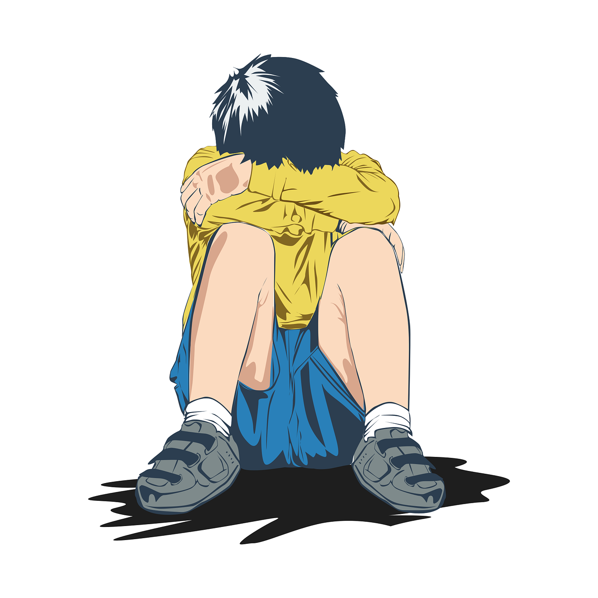

Importancia de la detección temprana
En el cuidado y educación de los niños, es fundamental reconocer y tratar los trastornos infantiles más comunes. La infancia es un período crucial para el desarrollo físico y psicológico, y las alteraciones en esta etapa pueden afectar significativamente la salud y bienestar futuros.
Los niños a menudo no pueden identificar cuando algo está mal, por lo que el papel de las familias en la detección es esencial.
Tipos de Trastornos Infantiles
Clasificados según su manifestación principal
Trastornos Emocionales
Dificultades que afectan principalmente la vida emocional del niño, con conductas poco evidentes:
- Ansiedad por separación: Ansiedad extrema al separarse de sus cuidadores principales.
- Mutismo selectivo: El niño habla normalmente en casa pero se vuelve extremadamente tímido en otros entornos.
- Fobias infantiles: Miedos excesivos e irracionales (oscuridad, animales, médicos).
- TOC infantil: Conductas y pensamientos repetitivos (rituales de control/lavado).
- Estrés postraumático: Recuerdos recurrentes tras experiencias traumáticas.
- Depresión infantil: Estado de ánimo deprimido con pérdida de interés en actividades.
Trastornos de la Conducta
Trastornos con manifestaciones conductuales más evidentes:
- TDAH: Dificultad para mantener atención y concentración con hiperactividad.
- Trastorno negativista desafiante: Comportamiento desobediente y hostil hacia figuras de autoridad.
- Trastorno disocial: Transgresión de derechos y normas sociales con conductas disruptivas.
Trastornos de Eliminación
- Enuresis: Pérdidas involuntarias de orina
- Encopresis: Defecaciones involuntarias
Trastornos por Tics
Movimientos o sonidos involuntarios repetitivos (ej. Síndrome de Tourette)
Trastornos Alimentarios
- Pica: Ingesta de sustancias no alimentarias
- Rumiación: Regurgitación y remasticación de comida
Trastornos del Aprendizaje
Dificultades específicas en áreas académicas:
- Dislexia: Dificultad en lectura y escritura
- Discalculia: Problemas con habilidades matemáticas
- Disgrafía: Alteración en la expresión escrita
- Disortografía: Problemas con normas ortográficas
- Disfasia: Alteraciones en lenguaje oral/escrito
- TANV: Dificultad con información no verbal
¿Por qué es importante la intervención temprana?
Una intervención tardía puede producir en el menor:
Desadaptación al entorno social
Bajo rendimiento académico
Problemas emocionales futuros
Los trastornos infantiles se identifican por interferir significativamente en la vida cotidiana del niño. No son dificultades pasajeras, sino problemas persistentes que requieren atención profesional.